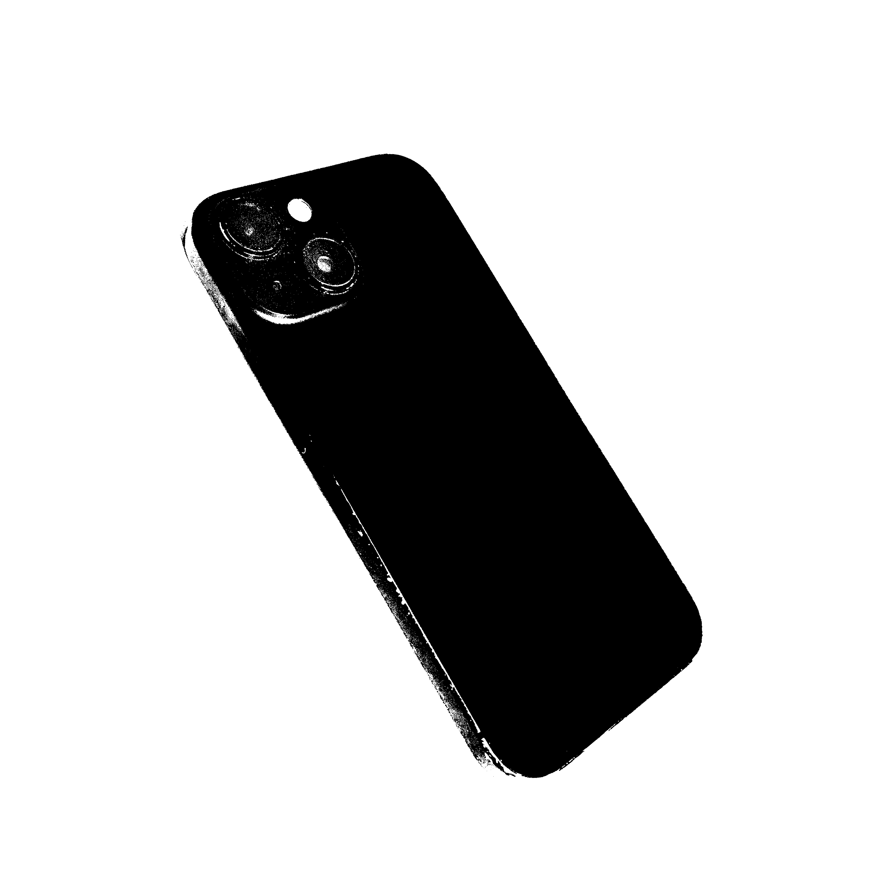
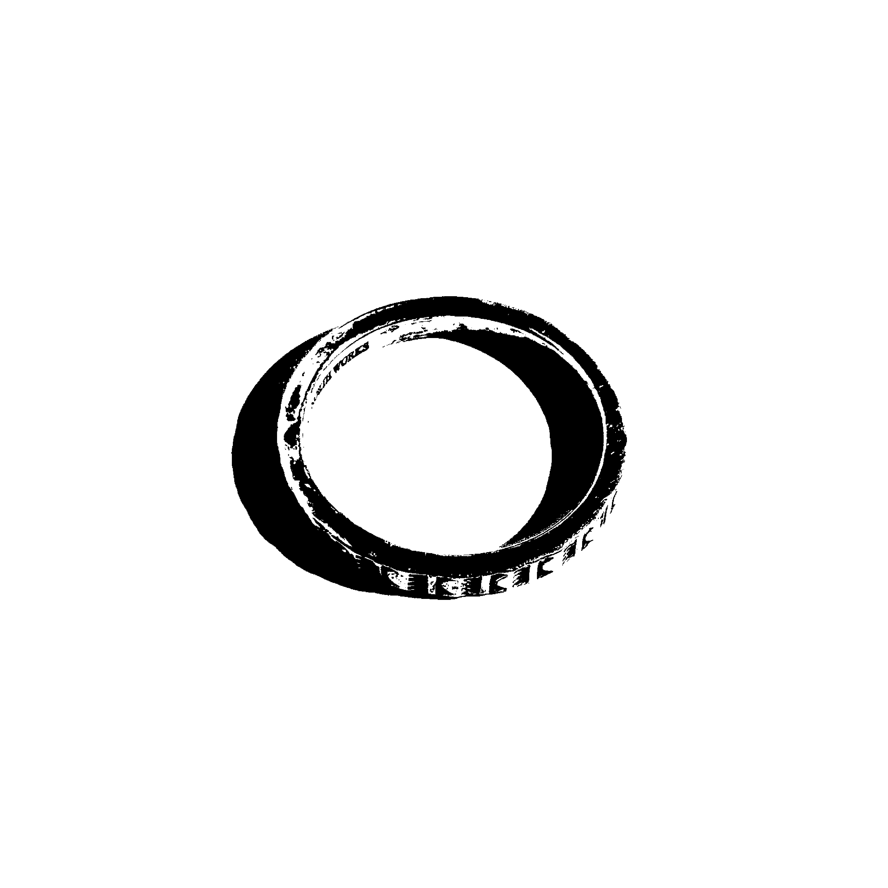

Objects
Straight

iPhone 15
Circle

Ring
Since
April 17, 2026
About this project
An everyday object can hold memory, compress time, or become the unlikely starting point of a thought. Each piece here is written using two of them — one straight, one circular — as guides for the hand.
The object determines the line. The line determines the thought. The objects used each day are documented alongside the writing.
Archive